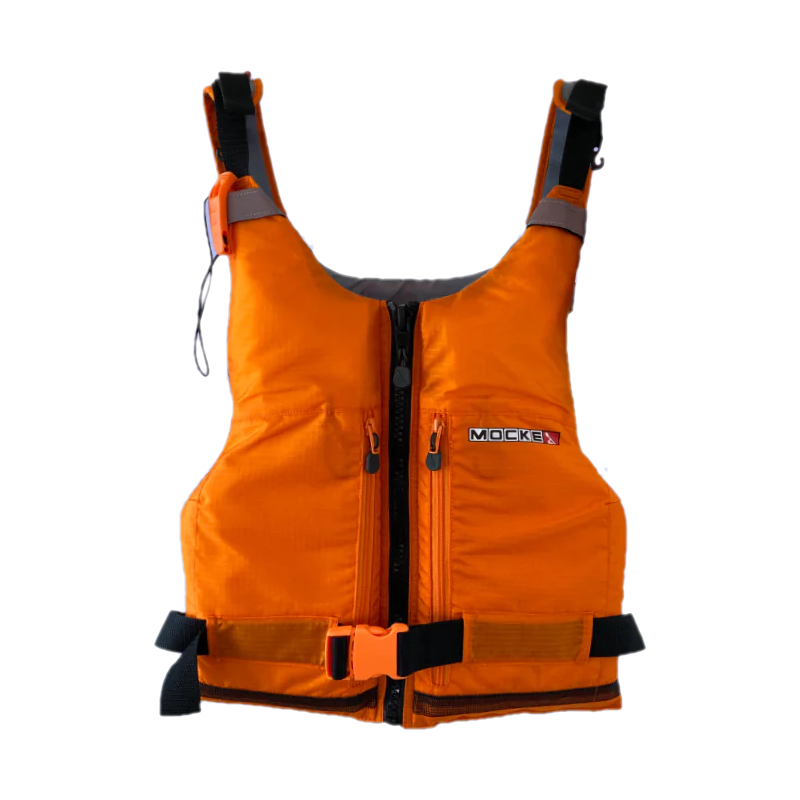

Présentation de l'activité
- Horaire : 9h à 16h
- Kayak simple : 2
- Kayak double : 3
Consigne de sécurité

À l'origine, le kayak est inuit, confectionné avec des membrures ployées, bordées et pontées de peaux, et manœuvré à l'aide d'une pagaie simple ou double.
Aujourd'hui, un kayak est réalisé en toile imperméable, matériaux synthétique ou pneumatique et manœuvré avec une pagaie double.
À la différence du canoë ou canot, le kayak se pratique à la pagaie double en position assise.
Certaines formes modernes comportent toujours un trou appelé hiloire servant à entrer dans le bateau.
Le kayak est parfois confondu avec le canoë, un type d'embarcation distinct, la pratique sportive étant désignée par le terme général « canoë-kayak ».
La construction et la pratique contemporaines distinguent notamment le kayak de rivière, le kayak de vitesse en eaux calmes et le kayak de mer.